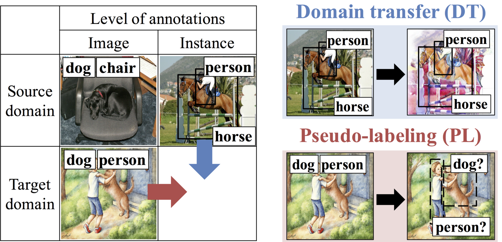
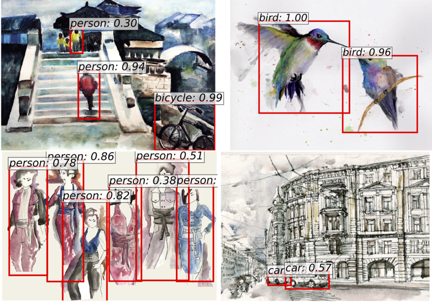

Cross-Domain Weakly-Supervised Object Detection
through Progressive Domain Adaptation
CVPR 2018

Left: The situation we tackle. Right: Two methods that we propose to generate pseudo instance-level annotated samples.

The detection results in our Watercolor1k dataset.
Abstract
Can we detect common objects in a variety of image domains without instance-level annotations? In this paper, we present a framework for a novel task, cross-domain weakly supervised object detection, which addresses this question. For this study, we have access to images with instance-level annotations in a source domain (e.g., natural image) and images with image-level annotations in a target domain (e.g., watercolor). In addition, all the target domain classes to be detected or a subset of them are in the source domain. Starting from a fully supervised object detector, which is pre-trained on the source domain, we propose a two-step progressive domain adaptation technique by fine-tuning the detector on two types of artificially and automatically generated samples. We test our methods on our newly collected datasets containing three image domains, and achieve an improvement of approximately 5 to 20 percentage points in terms of mean average precision (mAP) compared to the best-performing baselines.
Citation
Acknowledgements
This work was partially supported by JST-CREST (JPMJCR1686) and Microsoft IJARC core13.
N. Inoue is supported by GCL program of The Univ. of Tokyo by JSPS.
R. Furuta is supported by the Grants-in-Aid for Scientific Research (16J07267) from JSPS.
The website template was borrowed from Mip-NeRF 360.